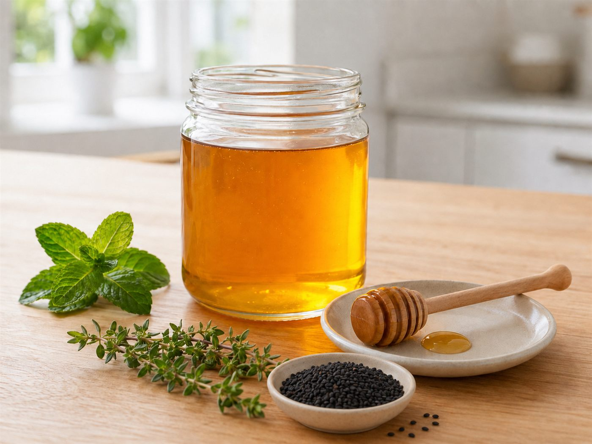

وحدة الليل والنهار — لقاء أحبك ربي مراجعة أسماء الله: الوهاب · الغني · الشافي
المرحلة: تمهيدي (5–6 سنوات) · المجلس: لقاء أحبك ربي — مجلس أسماء الله الحسنى · اليوم: وفق برنامج الوحدة
المدة: نصف ساعة
سؤال التركيز
كيف أعلمُ أنّ النعمةَ والشفاءَ من الله وحده، فأتوكّلَ عليه مع أخذ السبب؟
بوصلةُ اللقاء: تفتح به المعلمةُ الحوار وتعود إليه عند الغلق. يقيسه سؤالُ التغذية الراجعة الأول ومؤشراتُ النجاح.
جوهر اللقاء
الله هو الوهاب الغني الشافي؛ النِّعم من الله، والشفاء من الله، والأسباب لا تستقلّ بالتأثير بل تعمل بإذن الله؛ فأحبّ ربي وأشكره وأدعوه وأتوكّل عليه مع أخذ السبب.
تظهر موسّعةً في «المعنى المركزي» بسير اللقاء؛ لو لم يبقَ من الدرس إلا جملةٌ فهي هذه.
ورقة التدريس السريعة — خطوات اللقاء أثناء الدرس
① تهيئة وبداية اللقاء ٧ د
إشارة بدء اللقاء: آية الأسماء الحسنى وحديث فضل إحصائها، ثم جواب الإشارة.
آداب اللقاء: تذكير الأطفال بقوانين الفصل الخمسة.
مراجعة سريعة: أسماء اليوم الثلاثة ومعانيها الميسّرة.
② بناء وسير اللقاء ١٥ د
استراتيجية الصناديق المغلقة: صندوق لكل اسم مع بطاقاته.
الوهاب يهب النعم · الغني يحتاجه الخلق ولا يحتاج أحدًا · الشافي وحده يشفي والأسباب مسخّرة.
المعنى المركزي وتصحيح فهم الطفل، ثم أثر الإيمان بكل اسم.
③ إغلاق وتقويم ٨ د
النشاط المصاحب: «الصناديق المغلقة» وربط كل اسم بمعناه وأثره.
أسئلة التقويم: من وهبنا النعمة · من يشفي المريض · من يحتاجه الخلق جميعًا.
دعاء ختامي بأسماء الله ثم كفارة المجلس.
ربط الأسرة: يذكر الطفل لأسرته نعمة وهبها الله له فيحمده، ويقول عند المرض: «أخذت الدواء سببًا، والله هو الشافي».
ورقةٌ مرجعية سريعة أثناء الدرس — الخطوات فقط دون الأهداف والزيادات؛ والنصّ الكامل في تبويب «دليل الدرس كامل».
مسار بداية اللقاء
① تهيئة
إشارة بدء اللقاء — أسماء الله الحسنى
السلام عليكم ورحمة الله وبركاته يا أحباب الله. نستمع الآن إلى إشارة بدء اللقاء لنعرف ماذا سيكون لقاؤنا.
منهجية الإشارة: تبدأ المعلمة بتحية الإسلام، ثم تدعو الأطفال للاستماع دون أن تُسمّي اللقاء؛ فيستمعون إلى آية الأسماء الحسنى وحديث فضل إحصائها (إشارة مادة أحبك ربي) ويتعرّفون على لقائهم بأنفسهم — فيرتبط كلّ لقاء بإشارته في أذهانهم — ثم تؤكّد المعلمة: «نعم، لقاؤنا الآن هو لقاء أحبك ربي؛ نتعلّم أسماء الله الحسنى ونعرف معانيها وندعوه بها ونعيش آثارها»، فيتهيّؤون للجلوس والإنصات.
الحديث: قال رسول الله ﷺ: «إِنَّ لِلَّهِ تِسْعَةً وَتِسْعِينَ اسْمًا، مِائَةً إِلَّا وَاحِدًا، مَنْ أَحْصَاهَا دَخَلَ الْجَنَّةَ» (متفق عليه).
المعنى الميسّر: من إحصائها أن نتعلّم أسماء الله، ونفهم معانيها، وندعوه بها، ونعمل بما يحبه؛ نرجو أن يوفّقنا الله لذلك فنفوز بوعده.
▶فيديو إشارة بدء لقاء أحبك ربي
تستعين المعلمة بالفيديو لضبط نغمة إشارة بدء اللقاء، مع بقاء النصّ ظاهرًا في البطاقة.
جواب الإشارة: «لقاؤنا أحبك ربي؛ نتعلم أسماء الله الحسنى ونعرف معانيها وندعوه بها ونعيش آثارها».
تنبيه عقدي: لا يُقال: «ليس لله إلا تسعة وتسعون اسمًا». الحديث يبيّن فضل إحصاء تسعة وتسعين اسمًا، ولا يحصر أسماء الله كلها في هذا العدد.
قوانين الفصل
🧹 أحافظ على نظافة فصليإماطة الأذى عن الطريق صدقة.
🔔 أستمع وأنصتفلا أقاطع الآخرين.
🔒 أحفظ لساني ويديالمسلم من سلم المسلمون من لسانه ويده.
🪑 أجلس جلسة صحيحةفي المساحة المخصصة لي.
💬 أرفع يدي للمشاركةالسؤال للجميع والإجابة لمن تختاره المعلمة.
مراجعة سريعة
تراجع المعلمة مع الأطفال أسماء الله التي تعلّموها: ما أسماء الله التي نراجعها اليوم؟ (الوهاب · الغني · الشافي). ماذا يعني الاسم؟ (نذكّر بمعنى ميسّر لكل اسم). كيف ندعو الله بهذا الاسم؟ (يا وهاب هب لي، يا غني أغنني، يا شافي اشفني). من يهب النعم ويشفي المرضى؟ (الله وحده، والأسباب لا تعمل إلا بإذنه).
سير اللقاء
② سير وإغلاق
تهيئة الاستراتيجية: تعرّف المعلمة الأطفال باستراتيجية اللقاء: الصناديق المغلقة؛ كل صندوق فيه اسم من أسماء الله وبطاقات تساعدنا على تذكّر معناه وما نعمله إذا عرفناه.
اسم الله الوهاب — المعنى: الوهاب هو الذي يهب عباده من فضله العظيم، ويوسّع لهم في العطاء. تفتح المعلمة الصندوق الأول وتُخرج بطاقة «الوهاب»، وتسأل: من الذي يهبنا السمع والبصر والصحة والعقل والوالدين؟ (الله الوهاب).
ربط بالقصة: تذكّر المعلمة بقصة نبي الله سليمان عليه السلام، دعا الله باسمه الوهاب فاستجاب له ووهبه نعمًا عظيمة مميزة.
أثر الإيمان بالوهاب: أحبّ الله الوهاب وأعبده وحده لأنه تفضّل عليّ بالهبات · أشكره على نعمه التي لا تُحصى · أعطي مما وهبني الله فأساعد وأُعلّم غيري · أدعوه باسمه الوهاب وأطلب منه ما ينفعني.
اسم الله الغني — المعنى: الغني واسع العطاء، خزائنه ملء السماوات والأرض، يحتاجه جميع عباده، وهو سبحانه لا يحتاج إلى أحد. تفتح المعلمة الصندوق الثاني وتُخرج بطاقة «الغني»، وتعرض بطاقات حاجات الناس وتسأل: لكلٍّ حاجة، فمن يعطي كلَّ واحدٍ حاجته؟
حوار الغني: الفقير من يُغنيه؟ (الله الغني). المريض من يشفيه ولو كان غنيًا؟ (الله الغني الشافي). الحزين من يجبر قلبه؟ (الله). ثم تؤكّد: نحن فقراء إلى الله في كل شيء، والله غني لا يحتاج إلى أحد ﴿أَنتُمُ الْفُقَرَاءُ إِلَى اللَّهِ﴾.
اسم الله الشافي — المعنى: الله الشافي هو وحده الذي يشفي من أمراض القلوب والأبدان. تفتح المعلمة الصندوق الثالث وتُخرج بطاقة «الشافي»، وتعرض محسوسات الأسباب: العسل، ماء زمزم، الحبة السوداء، الدواء.
الأسباب والشفاء: من رحمة الله الشافي أنه سخّر لنا أشياء ننتفع بها عند المرض، لكنها أسباب لا تشفي بذاتها. تذكّر المعلمة بقصة نبي الله أيوب عليه السلام، ابتلاه الله بالمرض فدعاه فشفاه الله الشافي. تختم: إذا مرضت ألجأ إلى الله الشافي، وآخذ بالأسباب التي سخّرها، وأدعوه: يا شافي اشفني.
المعنى المركزي: الله هو الوهاب الغني الشافي؛ النِّعم من الله، والشفاء من الله، والأسباب لا تستقلّ بالتأثير بل تعمل بإذن الله؛ فأحبّ ربي وأشكره وأدعوه وأتوكّل عليه مع أخذ السبب.
تصحيح فهم الطفل: الدواء والعسل وماء زمزم أسبابٌ سخّرها الله، والشافي هو الله وحده؛ فلا نقول «الدواء شفاني» بل «أخذتُ الدواء سببًا، والله هو الذي شفاني». وغِنى الله لا يشبه غِنى الناس؛ فالناس محتاجون والله وحده الغني. وأسماء الله تُعظَّم ولا تُجعل لعبة أو مزاحًا، ولا تُمثَّل ذاته ولا صفاته ﴿لَيْسَ كَمِثْلِهِ شَيْءٌ﴾.
الترديد الجماعي: بعد كل اسم يردّد الأطفال دعاءً قصيرًا: «يا وهاب هب لنا من فضلك، يا غني أغننا بفضلك، يا شافي اشفِ مرضانا».
جملة اللقاء الختامية: ربي هو الوهاب الغني الشافي؛ أشكره على نِعمه، وأسأله الشفاء والغنى، وآخذ بالأسباب متوكّلًا عليه.
وقفة تربوية: التعلّق بالله مع أخذ الأسباب (نعلّم الطفل الطمأنينة بالله والشكر له من غير أن ننسب التأثير للأسباب)
تنقل المعلمة الطفل من حفظ معنى الاسم إلى عيش أثره: يشكر الله الوهاب على النعم، ويطمئن إلى الله الشافي عند المرض، ويعلم أنه فقير إلى الله الغني في كل حال.
ضابط عقدي وتربوي: لا تُمثَّل ذات الله ولا صفاته ولا يُرمز إليها بصورة ﴿ليس كمثله شيء﴾، ولا تُحوَّل أسماء الله إلى لعبة أو مسابقة معلومات. تُثبَّت العبارة العقدية المعتمدة: الدواء سبب، والله هو الشافي؛ ونربط الطفل بالنعم المشاهدة والأسباب النافعة دون تكلّف.
الوسائل والصور المعروضة في اللقاء
بطاقات نشاطمطابقةأسماء الله ↔ المعاني
بطاقات أسماء الله ومعانيهااضغط للتكبير ⤢
الصناديق المغلقة الثلاثةصندوق لكل اسم مع بطاقاته
بطاقات الأسماء ومعانيهاالوهاب · الغني · الشافي
بطاقات حاجات الناسمريض · فقير · جائع · حزين · غني

محسوسات الأسبابالعسل · ماء زمزم · الحبة السوداء · الدواء
النشاط المصاحب
بطاقات «مطابقةُ اسم الله بمعناه — الوهاب · الغني · الشافي» بهويّة غرس — تُطبع وتُقصّ؛ يطابق الطفلُ كلَّ اسمٍ بمعناه 🖨️ للطباعة الكبيرة ↗
أحبك ربيمطابقةُ اسم الله بمعناه — الوهاب · الغني · الشافيبطاقات نشاط
أسماء الله الحسنى
الوهاب
الغني
الشافي
المعاني
الذي يهبُ عبادَه من فضله العظيم ويوسّع لهم في العطاء
يحتاجه الخلقُ جميعًا ولا يحتاج أحدًا
هو وحده الذي يشفي من أمراض القلوب والأبدان، مع الأخذ بالأسباب
الصناديق المغلقة
فكرةُ النشاط بلمحة
الهدفأن يراجع الطفل معاني الأسماء الثلاثة ويربط كل اسم بمعناه وأثره العملي.
كثير الحركة: يتولّى فتح الصناديق وتوزيع البطاقات وترتيبها.
دعاء ختامي تعليمييا وهاب هب لنا من فضلك، يا غني أغننا بفضلك، يا شافي اشفِ مرضانا، وارزقنا شكر نعمتك. (صياغة تعليمية جامعة لأسماء اللقاء)
اختيارات الأنشطة الإضافية
تلبية الاحتياجات الفرديةالخجول: يختار صورة ويضعها بجانب الاسم. السريع: يذكر أثرًا عمليًا للاسم. كثير الحركة: يفتح الصناديق ويوزّع البطاقات ويرتّبها.
الربط بالمواد الأخرىعلّمني ربي: محبة الله وتعظيمه. أدب واقتداء: الشكر والدعاء. لساني: صياغة عبارة عقدية سليمة عن السبب والشفاء.
التوسيع والإثراءبيتي: يذكر لأسرته نعمة وهبها الله له فيحمده. فني: تلوين بطاقات الأسماء الثلاث (بلا تمثيل لذات الله أو صفاته، وبلا صور ذوات أرواح).
اقتراحات للتكرار مراجعة الأسماء الثلاثة ومعانيها وأثرها ٣ دقائق في مطلع اللقاء التالي قبل الدرس الجديد.
كفارة المجلس · خاتمة اللقاء
سبحانك اللهم وبحمدك، أشهد أن لا إله إلا أنت، أستغفرك وأتوب إليك.
العلاقة التكاملية لهذا اللقاء
اليوم الأول · مفهوم الليل والنهار: من ملاحظة تعاقب الليل والنهار إلى عبادة التفكّر في خالقهما.
سؤال اليوم: من خلق الليل والنهار؟ وكيف يقودني تغيّرهما إلى ذكر الله؟
هذا اللقاء: أحبك ربي — مراجعة أسماء الله: الوهاب والغني والشافي.
كيف يتكامل هذا اللقاء مع بقية دروس اليوم والوحدة؟
التعليمُ التكامليّ = يعيشُ الطفلُ المعنى الواحد في كلّ حصص يومه؛ فلا يكون هذا اللقاء جزيرةً منعزلة، بل خيطًا يربط القرآنَ واللغةَ والأدبَ في تجربةٍ واحدة. وهذه جسورُ الربط العمليّة:
كتابي المنير — سورة الفجر
أقسم اللهُ بالليل والنهار؛ فالخالقُ الذي أقسم بهما هو الوهابُ الغنيُّ الشافي، فما يسمعه الطفلُ من قسم الله يقودُه إلى تعظيم أسمائه. حركةُ المعلمة: «الذي أقسم بالليل والنهار… هو ربُّنا الوهابُ الذي وهبنا كلَّ نعمة».
علّمني ربي — مفهوم الليل والنهار
تعاقبُ الليل والنهار آيةٌ في الكون تدلّ على الخالق؛ فمن ملاحظة هذه الآية ينتقلُ الطفلُ إلى معرفة أسماء الله: الوهابِ الذي وهب النور، والغنيِّ الذي نفتقر إليه، والشافي الذي نسأله العافية. حركةُ المعلمة: «مَن الذي وهبنا الليلَ للراحة والنهارَ للعمل؟ ربُّنا الوهاب».
لساني عربي — الحركات
يقرأ الطفلُ أسماءَ الله وكلماتِ النعم بالحركات القصيرة، فتصبح اللغةُ أداةً للتعبير عن أسماء الله وحمده. حركةُ المعلمة: «نقرأ (الوهّاب) بالحركات… ما معنى أنه وهّاب؟ يُعطينا بلا حساب».
أدب واقتداء — الأذكار
معرفةُ الأسماء تُثمرُ ذكرًا؛ فيسأل الطفلُ اللهَ الشافيَ العافيةَ والغنيَّ الكفايةَ بأذكار الصباح والمساء. حركةُ المعلمة: «كلّما أصبحنا نسأل الله الشافيَ العافية… ونحمدُ الغنيَّ على كفايته».
الأركان والأناشيد
في ركن أكتشف ما حولي يلاحظُ الطفلُ نعمَ الله (النورَ والطعامَ والعافية) باللعب، فيربطها بأسماء الوهاب والغني والشافي. حركةُ المعلمة: ربطُ نشاط الركن بعبارة «كلُّ نعمةٍ من الوهاب سبحانه».
فكرة للربط السريع
خدمة اللقاء للفكرة: تعاقب الليل والنهار نعمةٌ من الله الوهاب، وفي الليل نسأل الله الشافي والغني ونستريح، وفي النهار نسعى ونشكر؛ فيربط الطفل تجدّد اليوم بتجدّد النعم من الوهاب، وحاجتنا الدائمة إلى الله الغني. اسألي: ما النعمة التي وهبك الله في هذا اليوم فتشكره عليها؟
التقويم في منهج غرس القيم ثلاثي المراحل — يرصد الطفل قبل الدرس وأثناءه وبعده.
التقويم القبلي
ما اسم لقائنا؟ ولماذا سميناه أحبك ربي؟
من يتذكّر اسمًا من أسماء الله التي تعلّمناها؟
ما معنى: أحصاها؟
التقويم التكويني
يميّز الطفل بطاقة الاسم من بين البطاقات
يربط الاسم بمعناه أو بموقف مناسب
يجيب إجابة قصيرة: ماذا أفعل إذا عرفت هذا الاسم؟
مدى سلامة عبارته: الدواء سبب والله هو الشافي
التقويم النهائي
يذكر اسمًا واحدًا ومعناه الميسّر
يدعو الله باسمٍ مناسب
يذكر سلوكًا عمليًا مرتبطًا بالاسم
المعيار: ذكر اسمين من الثلاثة بمعناهما وأثر عملي لكلٍّ منهما
مؤشرات النجاح
المؤشر المعرفي
يذكر معنى ميسّرًا للوهاب والغني والشافي، ويميّز بين السبب وأن الشفاء من الله.
المؤشر المهاري
يربط نعمة محسوسة باسم الله الوهاب، ويصوغ عبارة عقدية سليمة عن السبب والشفاء.
المؤشر الوجداني
يظهر محبةً لله الوهاب وطمأنينةً إلى الله الشافي، وتأدّبًا عند ذكر الأسماء.
المؤشر التطبيقي
يشكر الله على نعمة قريبة، ويدعوه باسمه المناسب، ويأخذ بالسبب متوكّلًا عليه.
الآداب الصفية لحظات تربوية ذهبية — تبدأ المعلمة كل فكرة بآية أو نص حديث، ولا يعلو صوتها على النص الشرعي. الحزم مع الهدوء دائمًا.
آداب المعلمة — مقدمة الرعاية
تبدأ بالبسملة والحمدلة والدعاء: «اللهم علّمنا ما ينفعنا وانفعنا بما علّمتنا».
تنطلق كل فكرة بآية أو نص حديث شريف.
الحزم مع الهدوء — فلا يعلو صوت المعلمة على النص الشرعي.
آداب الطفل في مجلس أسماء الله الحسنى
أجلس بسكينة وأحسن الاستماع عند ذكر أسماء الله الحسنى.
أردّد الاسم بأدب ووضوح، وأرفع يدي وأنتظر دوري قبل الإجابة.
أحافظ على بطاقات الأسماء والصناديق، ولا أسخر من إجابة أحد وأساعد زميلي برفق.
١ · توقير أسماء الله وبطاقاتها
الموقفعبث طفل ببطاقة اسم الله وألقاها على الأرض.
الرد المقترح«بطاقة اسم الله نكرّمها ولا نلقيها. نرفعها برفق ونضعها في مكانها بأدب؛ فأسماء الله نعظّمها».
القيمةتعظيم الله — المحافظة على بطاقات الأسماء.
ربط بالدرس: الصناديق وبطاقات الأسماء مدخل لتعظيم الله لا مسابقة معلومات.
٢ · الترديد بأدب ووضوح
الموقفردّد طفل الاسم بصوت عالٍ عابث دون أدب.
الرد المقترح«نردّد اسم الله بأدب وصوت هادئ، محبةً لله وتعظيمًا. هيا نقولها معًا برفق: يا وهاب، يا غني، يا شافي. جزاك الله خيرًا».
القيمةالأدب في ذكر الله — الترديد الهادئ.
ربط بالدرس: من قوانين الفصل التي نلتزم بها في مجلس الأسماء الحسنى.
٣ · حسن الاستماع وعدم المقاطعة
الموقفتحدّث طفل مع زميله أثناء عرض معنى الاسم.
الرد المقترح«حين نتعلّم اسمًا من أسماء الله أنصتنا ولم نقاطع؛ نستمع بقلوبنا لنعرف ربنا ونعيش أثر اسمه. جزاك الله خيرًا».
القيمةحسن الاستماع — الإنصات عند ذكر أسماء الله.
ربط بالدرس: نستمع لمعنى كل اسم وأثره بإنصات.
٤ · السكينة والوقار في الجلوس
الموقفتحرّك طفل كثيرًا وهو في مجلس الأسماء الحسنى.
الرد المقترح«في مجلسنا نجلس بسكينة ووقار توقيرًا لذكر أسماء الله. اجلس هادئًا يا بطل، وستفتح صندوقك بعد قليل».
القيمةالسكينة — الوقار عند ذكر الله.
ربط بالدرس: من قوانين الفصل «أجلس جلسة صحيحة» و«أستمع وأنصت».
٥ · الانتظار وضبط النفس في النشاط
الموقفأراد طفل أن يفتح كل الصناديق قبل أن يأتي دوره.
الرد المقترح«انتظر دورك يا بطل، لكلٍّ منّا صندوق يفتحه ويختار بطاقته. حسن الانتظار من أدب المجلس. جزاك الله خيرًا».
القيمةضبط النفس — أدب الدور — احترام المجموعة.
ربط بالدرس: نشاط «الصناديق المغلقة» يتناوب فيه الأطفال.
القيمة تترسّخ حين تُعاش في البيت كما تُتعلَّم في الفصل — هذه التهيئات يُطبّقها ولي الأمر قبل الدرس وبعده.
١ · تهيئة وجدانية
أيُحدّث ولي الأمر طفله أن الله الوهاب وهبه نعمًا كثيرة، فيحبّ ربه ويشكره عليها.
بيقول له عند المرض: «نسأل الله الشافي أن يشفيك»، فيطمئن قلبه إلى الله.
← يربط الطفل بين معنى الاسم والطمأنينة في حياته الفعلية.
٢ · تهيئة معرفية
أيذكّره أن الله الغني يحتاجه الخلق جميعًا وهو لا يحتاج أحدًا، وأننا فقراء إليه في كل شيء.
بيسأله بلطف: «من الذي وهبنا السمع والبصر والصحة؟» (الله الوهاب).
← يرسّخ المعنى قبل عرضه في الصف.
٣ · تهيئة بالشكر والدعاء
أيشجّعه على شكر نعمة قريبة: طعام، ماء، عافية، فيقول: الحمد لله، الله الوهاب.
بيعلّمه دعاءً قصيرًا: «يا وهاب هب لي، يا شافي اشفني».
← يعيش الطفل أثر الاسم شكرًا ودعاءً قبل عرضه في الصف.
٤ · تهيئة الأخذ بالأسباب
أيعلّمه عند المرض أن يأخذ الدواء سببًا ويقول: «الدواء سبب، والله هو الشافي».
بيصحّح له برفق إن قال «الدواء شفاني»: «بل الله الشافي، والدواء سبب سخّره الله».
← يصبح السلوك اليومي نفسه جزءًا من الدرس بعبارة عقدية سليمة.
٥ · تهيئة العطاء
أيذكّره أن نعطي مما وهبنا الله: نساعد غيرنا ونعلّمهم مما نعرف.
بيشركه في صدقة صغيرة أو مساعدة أخ، ويقول: الله الوهاب وهبنا فنعطي شكرًا.
← يزرع الكرم والشكر العملي في وجدان الطفل.
٦ · تهيئة تعاونية أسرية
يذكر كل فرد من الأسرة نعمة وهبها الله له في يومه ويحمد الله عليها، مع تعظيم أسماء الله وعدم اتخاذها مزاحًا.
← يزرع التعاون الأسري والشكر بمعية الله في وجدان الطفل.
أسئلة تطرحها على طفلك
من الذي يهبنا النعم؟ (الله الوهاب)
من يشفي المريض؟ والدواء ماذا يكون؟ (الله الشافي، والدواء سبب)
من يحتاجه الخلق جميعًا ولا يحتاج أحدًا؟ (الله الغني)
ماذا أقول شكرًا لنعمة الله؟ (الحمد لله، الله الوهاب)
‹
أولياء أمور الفصل
غرس القيم · دليل المعلمة
اليوم
بسم الله الرحمن الرحيم 🌿
السلام عليكم ورحمة الله وبركاته
📖 راجع طفلكم الكريم اليوم في مادة «أحبك ربي» أسماء الله: الوهاب (الذي يهب النعم)، والغني (الذي يحتاجه الخلق ولا يحتاج أحدًا)، والشافي (الذي يشفي وحده). وتعلّم أن يشكر الله على نعمه، ويأخذ بالأسباب مع يقينٍ أن الشفاء من الله.
🏡 نشاط بيتي: اذكروا معه نعمة وهبها الله لكم اليوم واحمدوا الله عليها، وعلّموه عند المرض أن يقول: «الدواء سبب، والله هو الشافي».
💚 جزاكم الله خيرًا على شراككم في تربية أبنائكم — فريق نادي غرس القيم
٨:٣٠ ص
اكتب رسالة…
انسخي الرسالة وأرسليها عبر واتساب أو تيليجرام — يُنسّق الغامق *هكذا* والمائل _هكذا_ تلقائيًا عند اللصق.
القيم الأساسية للدرس
محبة الله وتعظيمه
محبة الله الوهاب الذي تفضّل بالنعم، وتعظيم أسمائه الحسنى في القلب واللسان.
الشكر
شكر الله على نعمه التي لا تُعد ولا تُحصى بالقول والعمل.
التعلّق بالله مع أخذ السبب
اللجوء إلى الله الشافي مع الأخذ بالأسباب النافعة التي سخّرها.
الافتقار إلى الله
الشعور بأننا فقراء إلى الله الغني في كل حال، فنسأله ونتوكّل عليه.
كيف تغرس المعلمة القيم أثناء الدرس؟
تثبّت المعنى بعبارة عقدية سليمة: الدواء سبب، والله هو الشافي، بلا تمثيل لذات الله أو صفاته.
تربط كل اسم بنعمة محسوسة أو سلوك: شكر، دعاء، عطاء، أخذ بالسبب.
تنمذج الدعاء بالاسم: «يا وهاب هب لي، يا شافي اشفني، يا غني أغنني».
تحفظ توقير الأسماء فلا تُجعل لعبة أو مزاحًا.
المفاهيم الأساسية
الوهاب
الذي يهب عباده من فضله العظيم ويوسّع لهم في العطاء.
الغني
واسع العطاء، خزائنه ملء السماوات والأرض، يحتاجه الخلق ولا يحتاج أحدًا.
الشافي
الذي يشفي وحده من أمراض القلوب والأبدان، والأسباب مسخّرة بإذنه.
السبب والتوكّل
الأخذ بالأسباب النافعة مع يقين أن التأثير بإذن الله وحده.
الاستراتيجيات التعليمية
الصناديق المغلقةصندوق لكل اسم يُخرج منه الطفل بطاقة الاسم ومعانيه وصوره.
الحوار الموجّهأسئلة تقود الطفل: من يهب النعم؟ من يشفي المريض؟ من يحتاجه الخلق؟
الربط بالمواقف والمحسوسربط الاسم بنعمة أو سبب محسوس قريب من حياة الطفل.
بطاقات المعلوماتبطاقات معنى وأثر لكل اسم يصنّفها الطفل بجانب الاسم المناسب.
الترديد الهادفدعاء جامع بالأسماء بعد المراجعة: يا وهاب، يا غني، يا شافي.
الأساليب العشرة
١ · المناقشة الهادفة
أسئلة تقرّب معنى كل اسم: من الوهاب؟ من الشافي؟ من الغني؟
٢ · العصف الذهني
استدعاء ما يعرفه الطفل عن أسماء الله التي تعلّمها سابقًا.
٣ · الترديد الجماعي
«يا وهاب هب لنا، يا غني أغننا، يا شافي اشفِ مرضانا».
٤ · العرض البصري
الصناديق وبطاقات الأسماء والصور ومحسوسات الأسباب على لوحة واضحة.
٥ · التصنيف والربط
يضع الطفل كل بطاقة معنى أو صورة بجانب اسمها المناسب.
٦ · النشاط العملي
فتح الصناديق وإخراج البطاقات وترتيبها بالدور.
٧ · التنظيم بالدور
تناوب الأطفال على فتح الصناديق واختيار البطاقات مع الانتظار.
٨ · التعزيز الإيجابي
جزاكِ الله خيرًا · بارك الله فيك · أحسنت الشكر.
٩ · القصة الداعمة
قصة سليمان عليه السلام مع اسم الوهاب، وأيوب عليه السلام مع اسم الشافي.
١٠ · التكرار
إعادة معاني الأسماء وأثرها وترديد الدعاء لتثبيتها في الوجدان.
الوسائل
مرئية
الصناديق الثلاثة وبطاقات الأسماء ومعانيهابطاقات حاجات الناس ومحسوسات الأسباب
سمعية
إشارة المادة: آية الأسماء الحسنى وحديث فضل إحصائهاقراءة معاني الأسماء والدعاء بها بصوت المعلمة الواضح
عملية (Hands-on)
فتح الصناديق وإخراج البطاقاتتصنيف بطاقات المعاني والصور بجانب الأسماءترتيب البطاقات وتسليم الدور
قيمية (شرعية)
محبة الله الوهاب والشكر على نعمهالتعلّق بالله الشافي مع أخذ السببالافتقار إلى الله الغني وتعظيم أسمائه
الحصيلة اللغوية تُعزّز الفهم وتُنمّي القدرة على التعبير — تُستخدَم بشكل طبيعي أثناء الدرس.
الوهابالغنيالشافيالنعمةالسببالشفاء
الكلمات الأساسية في الدرس
الكلمة
بيان المعنى
الوهاب
الذي يهب عباده من فضله العظيم ويوسّع لهم في العطاء.
الغني
واسع العطاء، يحتاجه الخلق جميعًا ولا يحتاج إلى أحد.
الشافي
الذي يشفي وحده من أمراض القلوب والأبدان.
النعمة
ما ينعم الله به علينا من خير كالصحة والطعام والوالدين.
السبب
ما سخّره الله لننتفع به، ولا يؤثّر إلا بإذن الله.
الشفاء
زوال المرض بإذن الله، وهو من الله الشافي وحده.
مفردات ومفاهيم أسماء الله الحسنى (للمعلمة)
أسماء الله الحسنى
أسماءٌ عظيمة نعرف بها ربنا، وندعوه بها، ونحبه ونعظّمه.
أحصاها
تعلّمها، وفهم معناها، والإيمان بها، ودعاء الله بها، والعمل بمقتضاها.
الدعاء بالاسم
أقول: يا وهاب هب لي، يا غني أغنني، يا شافي اشفني.
أثر الإيمان بالاسم
سلوكٌ يظهر على الطفل: يشكر، ويدعو، ويعطي، ويأخذ بالسبب متوكّلًا على الله.
كيف تستخدم المعلمة هذه الحصيلة؟
تُدرج الكلمات بشكل طبيعي في شرحها دون توقف مفاجئ.
تستخدم الكلمة في جملة واضحة: «الوهاب هو الذي يهبنا كل النعم».
تكرّر الكلمات في سياقات مختلفة لتثبيتها.
تُشجّع الأطفال على استخدامها وتثني عليهم.
الآيات وتفسيرها
مصادر لضبط نصّ الآيات ومعناها قبل اللقاء
قرآن
Quran.com — سورة الأعراف، الآية ١٨٠
﴿وَلِلَّهِ الْأَسْمَاءُ الْحُسْنَىٰ فَادْعُوهُ بِهَا﴾ — إشارة أسماء الله الحسنى.
تربية الطفل على معرفة الله بأسمائه وعيش آثارها بلا تمثيل للصفات.
تربية
غرس الشكر والتوكّل مع الأخذ بالأسباب في الطفل (دليل عملي للمربين)
مركز دلائل – الرياض، ط3.
وقت الأركان التطبيقية
الأركان مساحاتٌ غنيّة بأدوات التعلّم، مدّتها ٣٠ دقيقة، يلعب فيها الأطفال ويستكشفون الأدوات بحرّية ومرح — لا التزام بآداب مجالس العلم كالمواد الأساسية. وتستقطع المعلمة وقتًا يسيرًا لتنفيذ نشاط تطبيقي سريع على الفكرة المركزية للدرس: الله هو الوهاب الغني الشافي؛ النِّعم من الله والشفاء من الله والأسباب مسخّرة بإذنه. أمام المعلمة ركنان مقترحان تختار بينهما (أو تنفّذهما معًا) بحسب جاهزية البيئة.
ضابط عقدي وتربوي: لا تُمثَّل ذات الله ولا صفاته ولا يُرمز إليها بصورة ﴿لَيْسَ كَمِثْلِهِ شَيْءٌ﴾، ولا تُحوَّل أسماء الله إلى لعبة؛ الصور والوسائل لتقريب الفكرة، والنص الشرعي يبقى في موضع التعظيم. تُثبَّت العبارة المعتمدة: الأداة سبب، والنعمة والشفاء من الله.